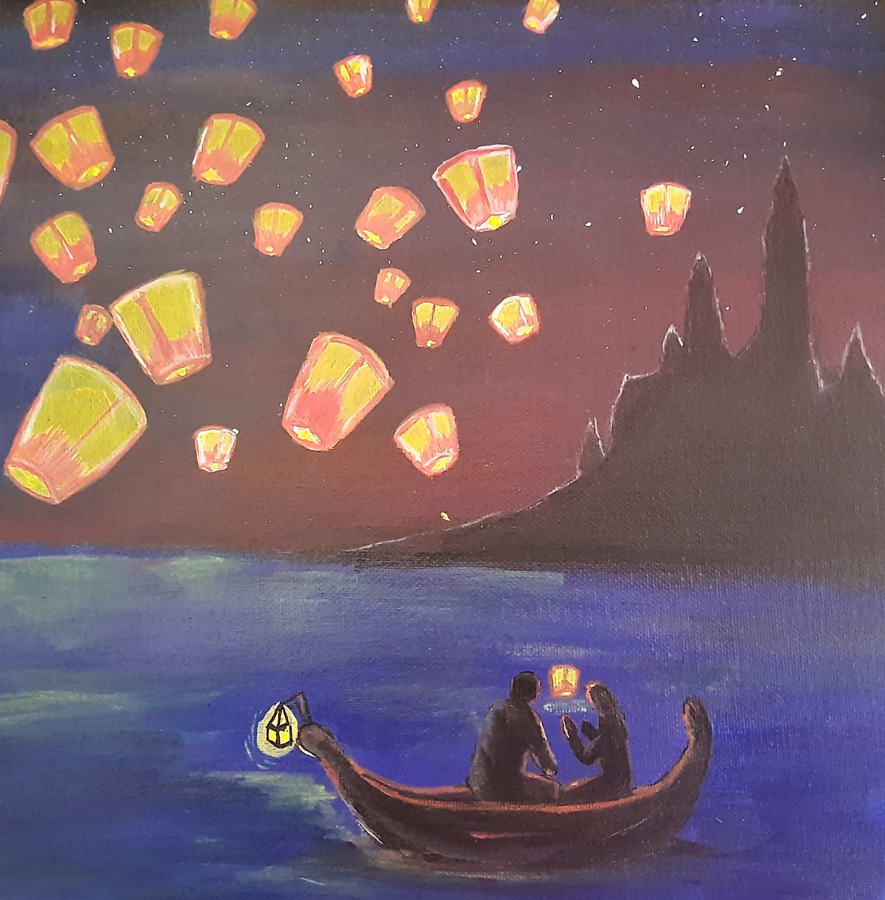
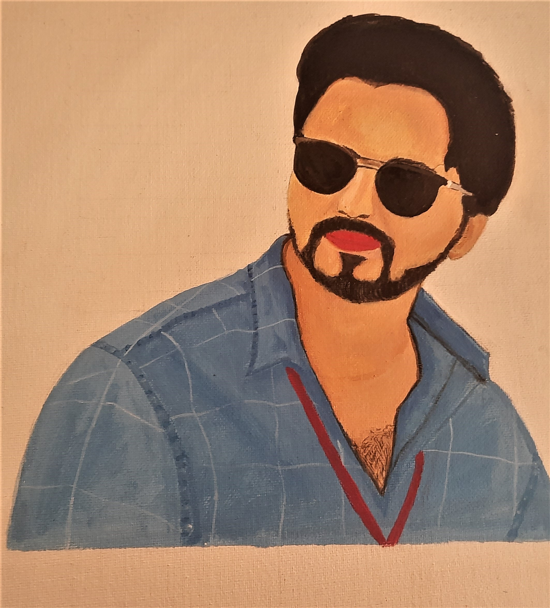
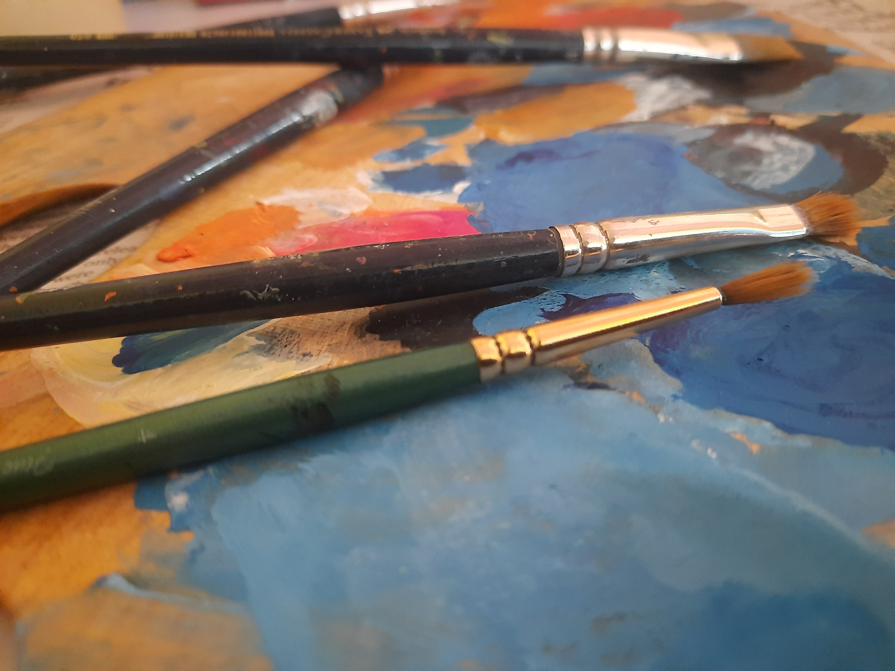

Lantern Art
what does this colorful lantern festival say it will bring happiness and hope in your life.Lantern were symbolic of good luck and hope. This lantern Art is made up of magical mixing colors
- Acrylic Paint
- 12 × 12 inch
- $ 17

Acrylic Paint
- Acrylic
- The Different colour Gives Different Experience.Acrylic paint is a fast-drying paint made of pigment suspended in acrylic polymer emulsion and plasticizers,silicone oils,defoamers,stabilizers or metal soaps.Most acrylic paint are water-based,but become water-ressistant when dry.

Picture Art
This Portrait Painting made of Acrylic paint.The white Background color shows a image on highlight
- Acrylic Paint
- 12 × 12 inch
- $ 15

Palette And Brushes
- Palette
- Just like there are seven colors in the rainbow,there are many colors on the palette
- Brushes
- A paintbrush is a brush used to apply paint or ink.A paintbrush is usually made by clamping bristles to a handle with a ferrule